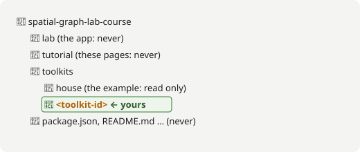

Page 1 of 12 · Start
Start here
Spatial Graph Lab turns a graph of rooms and their relationships into a building. In this course everyone makes a toolkit: a small folder that teaches the app one building type.

01What do you want to do?
Orange text like <toolkit-id> = replace it with your own. Grey buttons like Copy = something to click.
Session 2 today (about 2¾ hours)
- Set up, steps 06–13: the course folder on your laptop, the app running (the Before Session 2 checklist is already done).
- Plan and claim your toolkit name.
- Make it with a coding agent or a chat assistant; keep Git basics open beside you.
- Push it and check it on GitHub.
your branch is on GitHub with a green ✓ beside a commit that contains your toolkit folder.
03All pages
A. Use the app (browser only)
B. Make your toolkit (everyone)
C. Help
04The one rule
Only change your own folder. If unsure, ask. Your toolkit is one folder in the course repository; everything else belongs to the course. GitHub refuses pushes to the course's own branch and marks any work that changes other files with a red ✗.

toolkits/<toolkit-id>/, on your own branch.Public. The course repository is public: your branch, your README and your commit name can be read by anyone. Put no student number, passwords or keys in them.
05Words used here
- Node, edge
- A room, and a relationship between two rooms (Access or Open).
- Function
- A room's programme (Kitchen, Reading room…). A toolkit defines its Functions.
- Attribute
- A value a node or edge records, such as a target area or a number of seats.
- Analysis, transform
- An analysis reads the design and shows an answer. A transform proposes changes: you preview them, Apply, and one Undo reverses them.
- Parameter
- A setting you choose before a transform runs, such as a number of cells.
- Toolkit
- One folder of Functions, attributes, algorithms and example designs for one building type.
- Toolkit id
- Its short name,
<initials>-<toolkit-name>, e.g.hk-small-library: the name of your folder and branch. It never changes. - Kit
- A zip of instructions and examples you attach to an AI chat, so it writes files the app accepts.
- Coding agent, chat assistant
- An AI inside VS Code that works on your files (Codex, Claude Code, GitHub Copilot), or an AI website that only sees what you attach.
- Terminal
- A window where you type commands. In VS Code: Terminal › New Terminal (more).
- Repository
- The course folder with its history, kept on GitHub. You copy (clone) it to your laptop.
- Branch
- Your own line of work in the repository:
toolkit/<toolkit-id>.mainis the course's. - Commit, push, pull
- Save a snapshot of your changes; send your commits to GitHub; fetch commits from GitHub (more).
In the app, the Guide button explains every panel. Links: the app online · the course repository on GitHub.